डॉ. संत कुमार चौधरी, कूकस में स्थित शंकरा समूह संस्थान के परिसर, तथा
उन्होंने जिन कार्यक्रमों और गतिविधियों का निर्माण किया है — उनके
छायाचित्र।
उनकी यात्रा के क्षण
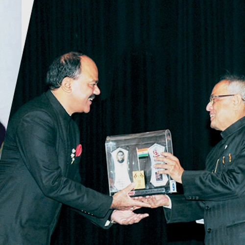
भारत के पूर्व राष्ट्रपति द्वारा सम्मानित
भारत के 13वें राष्ट्रपति श्री प्रणब मुखर्जी से स्मृति-चिह्न प्राप्त करते हुए।
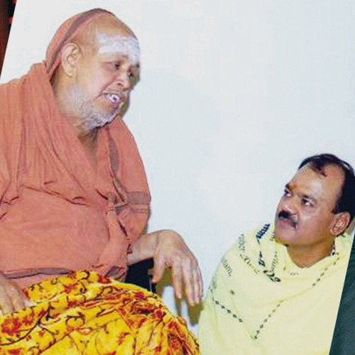
एक वरिष्ठ धर्माचार्य से संवाद
शंकरा संस्थानों के आध्यात्मिक मूलों को दर्शाता एक भेंट एवं वार्ता का क्षण।
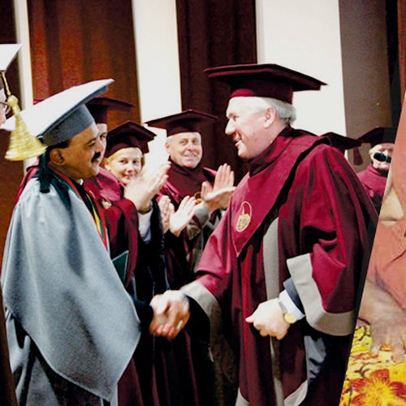
दीक्षांत समारोह में
एक औपचारिक शैक्षिक समारोह के मंच पर भेंट का क्षण।
उनके परिसर पर आयोजन
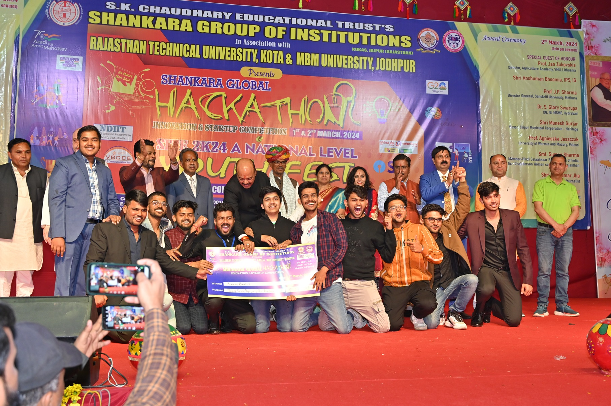
शंकरा ग्लोबल हैकाथॉन
शंकरा समूह संस्थान द्वारा राजस्थान तकनीकी विश्वविद्यालय, कोटा तथा
एमजीएम विश्वविद्यालय, जोधपुर के सहयोग से आयोजित राष्ट्रीय स्तरीय
हैकाथॉन।
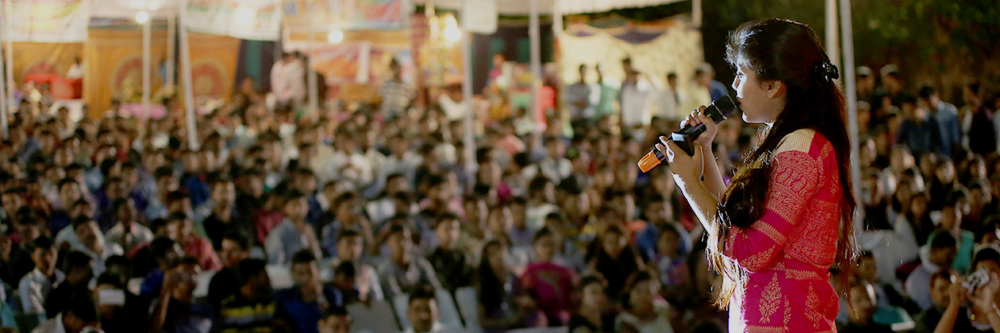
एसआईटीई युवा उत्सव
शंकरा परिसर का वार्षिक अंतर-महाविद्यालयीन युवा उत्सव — शैक्षिक,
क्रीड़ा एवं सांस्कृतिक आयोजनों में विशाल जन-समूह की उपस्थिति।
शंकरा परिसर, कूकस
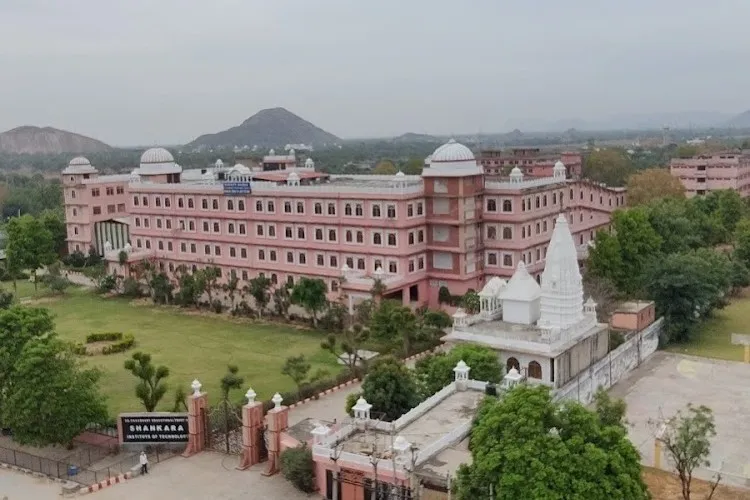
विहंगम दृश्य
अरावली पर्वत-तलहटी पर 27 एकड़ में फैला शंकरा परिसर, रीको औद्योगिक
क्षेत्र, कूकस, जयपुर।
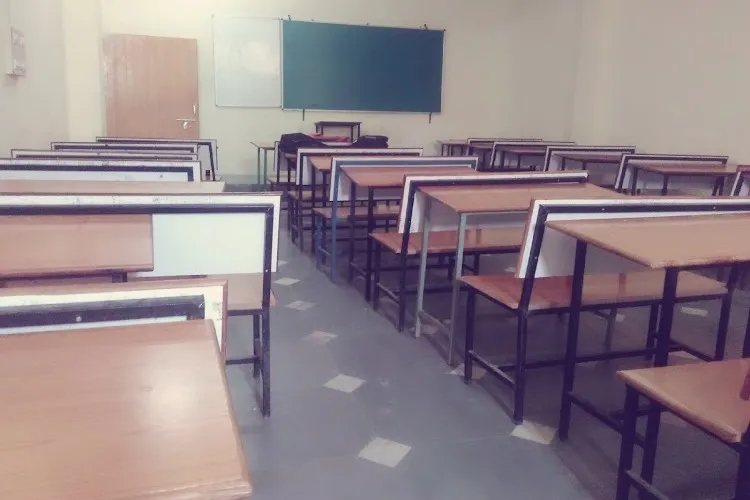
दीप्ति में भवनाथ भवन
किसी परिसर-उत्सव के अवसर पर सुसज्जित मुख्य भवन।
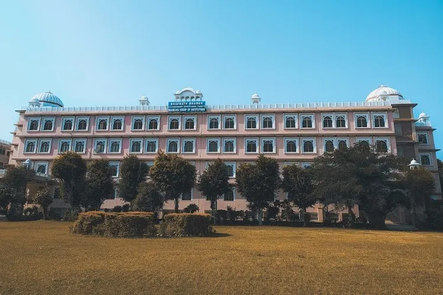
भवनाथ भवन
शंकरा समूह संस्थान का प्रमुख भवन।
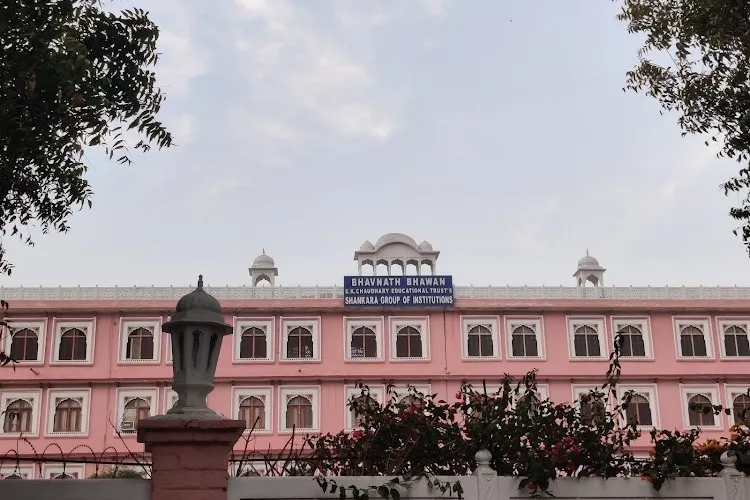
ट्रस्ट का नामपट्ट
भवनाथ भवन के प्रवेश-द्वार पर अंकित “एस.के. चौधरी एजुकेशनल ट्रस्ट ·
शंकरा समूह संस्थान”।
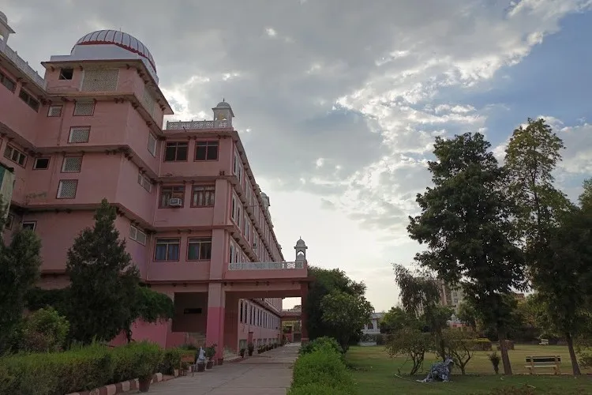
परिसर की वास्तुकला
शंकरा परिसर के भवनों पर सुशोभित परंपरागत शैली के गुम्बदों का पार्श्व दृश्य।
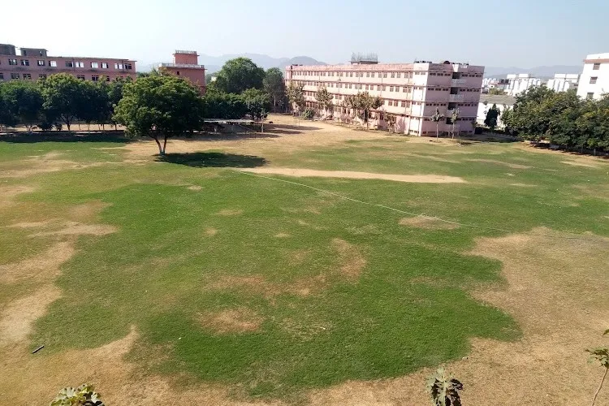
परिसर के मैदान
परिसर के केंद्र में खुले खेल-मैदान, अंतर-महाविद्यालयीन एवं राज्य-स्तरीय खेल-प्रतियोगिताओं हेतु उपयोग में।
विद्यार्थी
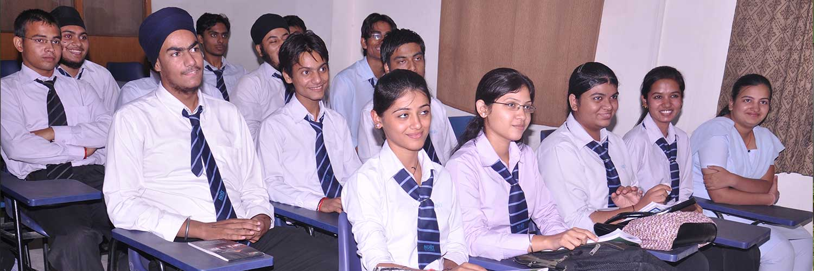
कक्षा में
उत्तर भारत के विभिन्न क्षेत्रों से आए विद्यार्थी — जो उनके निर्मित कार्य का हृदय हैं।
“…संस्थान के प्रत्येक अंग को अत्यधिक महत्त्व।”
अध्यक्ष का विद्यार्थियों के नाम संदेश, उनके अपने शब्दों में।
कृपया उपलब्ध कराएँ: प्रत्येक आयोजन/चित्र की तिथि एवं स्थान, गणमान्य
व्यक्तियों एवं प्राप्तकर्ताओं के नाम, और कोई अतिरिक्त चित्र जिन्हें आप
सम्मिलित करवाना चाहें (ग्रामीण बिहार के परिसर, के.वी.के. चानपुरा,
नेत्र चिकित्सालय, पुरस्कार समारोह, पारिवारिक अथवा व्यक्तिगत चित्र)।